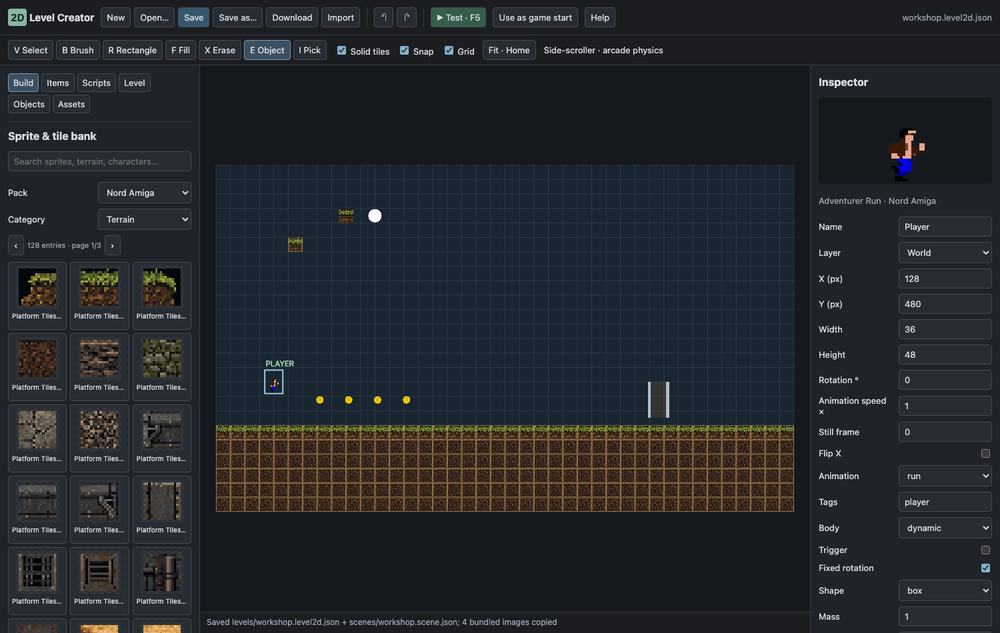
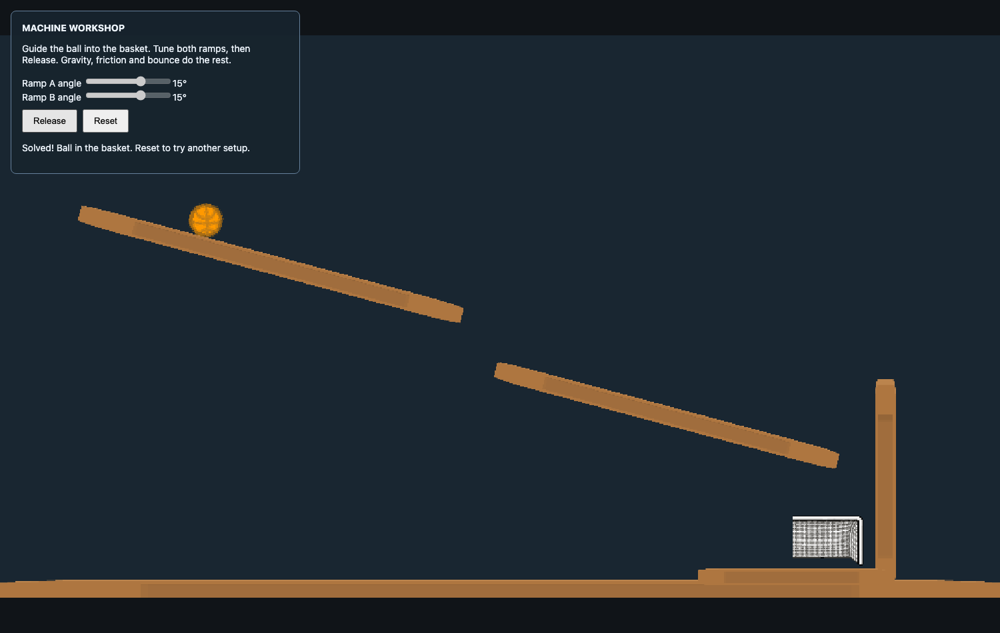

2D Level Creator — sprites, maps and physics
The 2D Level tab brings the FPS Level workflow to platform games, top-down games and physics puzzles. Start from 2D Platform Workshop, 2D Top-down Workshop, or Machine Workshop on the welcome screen.

Find a useful starting point#
The welcome screen has Featured / All / 2D / 3D / FPS / Physics / Apps / Rust filters for templates and samples. Featured keeps the short list manageable. Choose All to browse older examples; searching also finds older examples while Featured is active. No examples are deleted.
Build a platform or top-down game#
- Create a project from the matching workshop template. Open 2D Level; its saved workshop opens automatically.
- In Build, filter by pack/category or search. The bank contains the original Amiga collection and CC0 Kenney terrain, characters, industrial parts, dungeon tiles, sports and shooter art. Cards show frame previews; animated sheets play their real presets.
- Choose B Brush, R Rectangle or F Fill and paint on the map. Solid tiles gives those cells collision. Use X to erase and I to pick a picture from a tile/object.
- In Items, the first cards are working project items with their scripts and values. Select one and use B Brush to click/drag on the map, or drag its card onto the map. Two Floors includes Rat/Key/Door/Potion/Stairs/Relic; tanks include Enemy/Brick/Steel/Base. To create a generic item from raw art, select Player start, Pickup, Hazard, Exit / win, Door (E), Patrolling enemy, or a decoration/physics role, then choose a sprite and click to place. E is the object tool. Player must be named Player for the camera and have the
playertag for interactions. - V selects and moves objects; Shift-click selects several. The Inspector changes position, size, rotation, frame/animation, tags, body and scripts. Script fields are editable values; advanced attributes use JSON. Controllers and pickups are copied from Nord's existing library.
- F5 tests the unsaved level. WASD/arrows move, Space jumps in platform mode, E uses a nearby door, Esc pauses and R restarts. Shift+Esc returns to editing.
Middle/right drag or Space-drag pans, wheel zooms and Home fits the map. Ctrl/Cmd+Z undoes, Ctrl/Cmd+Shift+Z redoes, Ctrl/Cmd+D duplicates, Delete removes selected objects.
Moving around#
The view works like the Scene view: middle- or right-drag, Alt+drag, Space+drag or the Q Hand tool pans, the wheel zooms about the cursor, Ctrl/Cmd flips snapping while you drag, Home fits the level and Shift+F frames the selection.
Layers and reusable items#
Level manages layers from back to front. Select a layer to paint on it; hide, lock, reorder or rename it. Opacity and parallax control scenery. Parallax 1 is the normal world; 0 is fixed to the screen. Solid tile layers require 1. Hidden layers do not appear in gameplay. Brush clicks and palette drops both reject locked or hidden active layers; unlock and show the layer before placing content.
Select an object and use Save as variant to keep its appearance, body and scripts as a reusable item. Assets lists the saved variants; each placement gets a new independent identity. Variants live in the level file and are saved with it.
Objects finds placed things by name, tag or script and centres the map on them. Scripts attaches ready-made behaviors. Custom project scripts use scripts/*.js paths and can be edited through Nord's Code tab. Attach and configure the Hazard / exit / switch / door script to choose its action, target name, damage amount, win message and required score.
Side-view physics and Machine Workshop#
Choose Level → Physics → Arcade for ordinary platforms and action games. Choose Matter for rolling circles, rotated ramps and freely rotating boxes. Inspector controls include:
| Control | Effect |
|---|---|
| Body | None, static obstacle, dynamic simulated body, or script-driven kinematic body. |
| Trigger | Sends overlap events without blocking motion. |
| Shape | Box or circle; Arcade boxes remain axis-aligned. |
| Fixed rotation | Keeps a character upright; turn off for tumbling physics props. |
| Mass | Changes impulse and collision response. |
| Bounce | Restitution: 0 absorbs impact, larger values bounce. |
| Friction | Matter surface friction. |
| Drag | Slows body movement. |
| Gravity scale | 0 makes the body weightless; 1 uses normal gravity. |
Gravity is in pixels/s²; top-down mode uses zero gravity. Matter's kinematic bodies are static bodies moved by scripts. Joint/constraint editing is not included.
Machine Workshop is an original The Incredible Machine-style example. The main game begins in setup mode. Tune the two ramp angles, click Release, and guide the ball into the basket. Reset restores the apparatus. In 2D Level you can also move ramps and change body size, mass, bounce and friction. The sample's scripts/machine.js implements its setup controls; it uses normal Nord entities and Matter physics. No original TIM code or media is bundled.

Import your own art#
Assets → Import PNG copies a local PNG into the project. Register project image adds an existing PNG or uniform spritesheet: set frame width/height, column count and optional consecutive-frame loop/FPS. A still image uses its full dimensions and one column. Save writes Nord metadata next to custom images. Remote image URLs are not accepted.
Save and export the correct level#
Save writes two files:
levels/<name>.level2d.json: editable map, layers, objects, custom sprites and variants.scenes/<name>.scene.json: compiled ordinary Nord scene for Play/export.
Save copies only referenced bundled sheets, metadata and licence documents into the project. The editor bank and TEMP/ART are not required by an exported game. Existing edited scripts are preserved. A conflicting bundled asset is reported instead of overwritten.
Use Use as game start when this map should run from the main Play button or export. It saves the level/scene and applies project display, physics and input settings. Those settings affect the whole project. Then use Nord's normal Export command. F5 always tests unsaved data; main Play/export run saved files.
The editor currently supports finite orthogonal maps. It has no isometric/hex maps, automatic terrain rules, polygon/joint editor or Tiled/LDtk importer. Drag-and-drop feel in the native editor window has had less testing than the browser version.